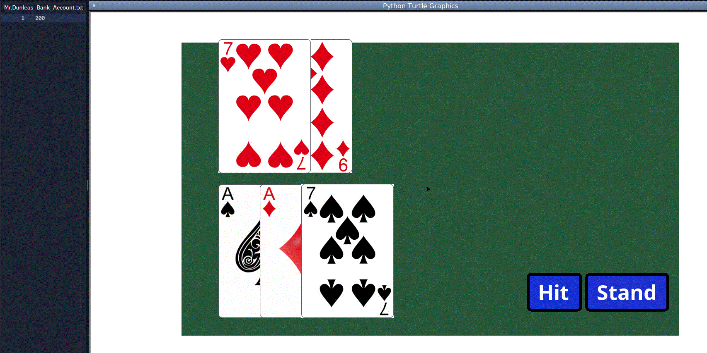

Home
Portfolio
About Me
This is my Portfolio Page!
This is project one!

Our project is a storytelling, choose your own adventure game called Gorilla Warfare. It is about raiding a monkey temple to discover the secret banana stash. It has a title screen, and 3 later screenstates which develop the story. The title screen controls a turtle to spell out our title, using a while-loop to create the L’s in Gorilla. The next scene involves encountering a wild Boss Monkey, which updates to the second screenstate after the user inputs “banana.” This second screen involves using a banana to attack the opposing monkey, which activates an iteration loop when the user inputs “pew.” This causes a banana-like projectile (turtle) that both changes size and color after to advance forward, stamping and clearing its previous stamp to make it appear as if it is moving in slow motion. After the monkey boss is defeated, the user is prompted to proceed to the treasure room by inputting “reward.” This opens the final screenstate, congratulating the user for completing Gorilla Warfare and finding the bananas.

The second project is Blackjack. The first screen that you see is the betting screen, which allows you to place your bet for the current round. There are 5 buttons on this screen that each set a different bet amount to the bet variable, a bet 10 button, a bet 20 button, a bet 50 button, a bet 100 button, and a custom bet button that allows you to set the bet to whatever value you want. Once you set your bet amount, your hand is dealt and so is the dealer's hand. There are two more buttons on this screen that allow you to either "hit" or "stand." The hit button draws another card and after drawing said card, the check_blackjack() and check_bust() functions are run. These two functions make sure that the user does not have 21 or more because if the user has 21, he has blackjack, and if he has over 21, he busts and loses his bet. When clicked on, the stand button compares the values of the dealer and player's hands. According to what it determines, the user's bet is multiplied by a predetermined amount based off of the rules of blackjack. This value is then either added or subtracted from the bank account text file which holds the amount of money the player has.
My third project is a roulette game set in a squirrel casino. Once you follow the story enough to get to the actual game, you place your bet and choose what you're betting on. The options to bet on are red, black, even, odd, or the numbers 0-12. The ball is then rolled by the casino host D-Money and when it lands, you are payed out accordingly. Functions are used to move the ball according to what random number is chosen by the computer for the end place of the ball. The win check function is used to check whether the user's bet matches the ball's position. Then, your bet is either multiplyed and added back to your bank account, or your bet is subracted from your bank account.